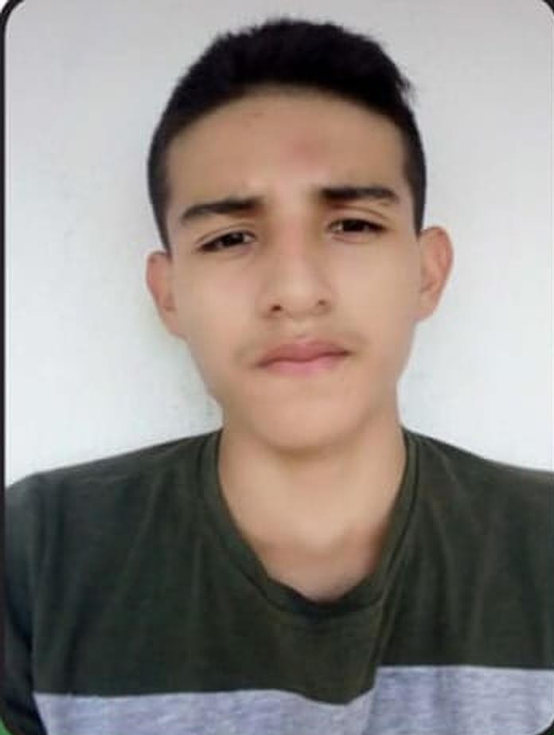

Autor
Luis David Chavez Florez
Correo: lchavezzflorez12@correo.unicordoba.edu.co
Breve descripción sobre ti y tu rol en el desarrollo del OVI.
Bibliografía
- Chapra, S. C., Canale, R. P., Ruiz, R. S. G., Mercado, V. H. I., Díaz, E. M., & Benites, G. E. (2011). Métodos numéricos para ingenieros (Vol. 5, pp. 154-196). New York, NY, USA: McGraw-Hill.
- Arganis Juárez, M., Herrera Alanís, J. L., & Domínguez Mora, R. (2013). Determinación de eventos de diseño de funciones bivariadas usando el método de bisección. Ingeniare. Revista chilena de ingeniería, 21(2), 293-300.
- Mathews, J., & Fink, K. (2000). Métodos Numéricos. Madrid: Prentice Hall.
- Muñoz, A. O. (2007). Resolución de problemas mediante la regla de falsa posición: un estudio histórico. Suma, 56, 55-61.